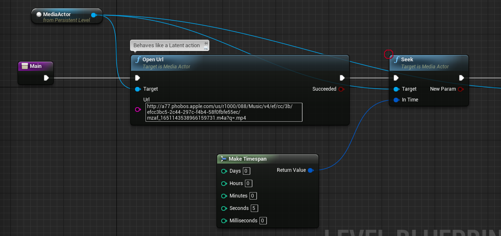
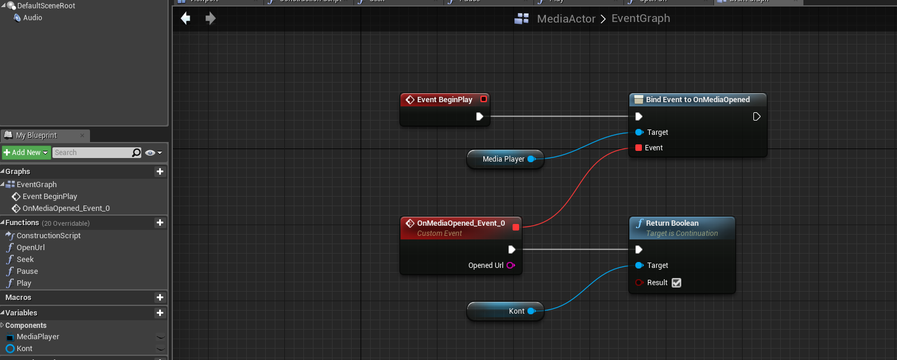
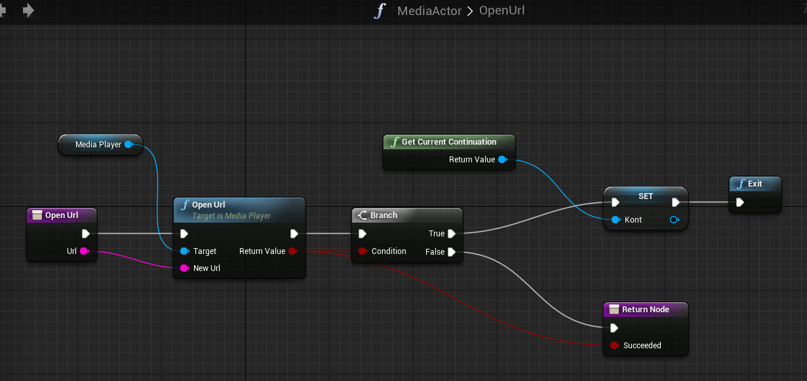
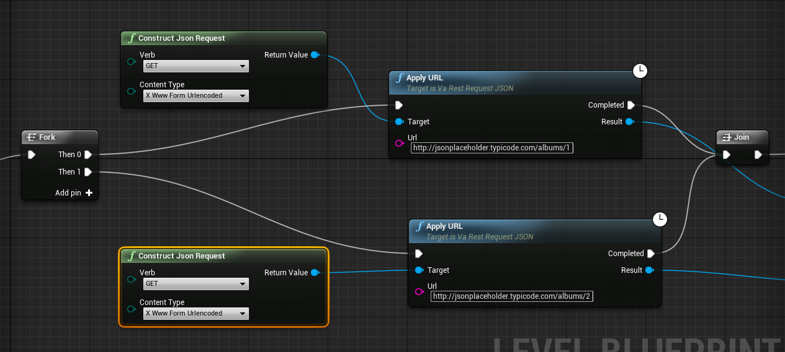

UE-4 Blueprints have a concept called "Latent Actions", one of the simplest being Delay shown below which suspends the current Blueprint for the specified number of seconds and then continues with whatever is connected to the Completed pin.
Currently all such latent actions show that clock icon. Here is another example from a plugin, which suspends the Blueprint during a network operation and then continues when the result is available:

In UE-4.10, latent action nodes are only allowed at the top level of a Blueprint event graph. They become inaccessible inside of functions. This is unfortunate because you are forced to use essentially global variables in such cases, and since an event graph contains a bunch of parallel event handlers, this quickly becomes a mess.
Blueprint graphs are in fact compiled to byte-code which is interpreted by a virtual machine written in C++. This vm uses an explicit stack, vm functions being of the form
void FUNC(FFrame &Stack, void *Result).
The 4.10 implementation creates the vm stack on
the C++ call stack, using alloca to reserve space for the local variables. That explains why latent actions are only allowed at the
top level, namely due to the fact that the instruction pointer and nothing else is preserved while the callback is pending. By preserving
(a copy of) the entire vm call stack, this limitation can be removed. Note that should we choose to make multiple copies of a call stack, the local variables can be shared, only the instruction pointers need be distinct. Of course all such copies must be allocated on the C++ heap rather than the C++ stack in order to
persist until the callback occurs.
I've created a fork of 4.10 that makes the rather small changes necessary to enable the general use of latent actions. In addition, it contains some experimental Blueprint nodes to enable using continuations directly in blueprints, which among other things allows you to create your own latent actions using only Blueprints.

The below produces the same result via an explicit continuation (well, not quite the same - it returns 43)

Here Return Integer is a function - which however itself does not return to its caller (hence it has no output pin). As you can see Get Current Continuation gives you a Continuation object - it represents what will happen when the current function (in this case Foo) returns. This object can be stored in a variable and otherwise passed around. It provides a bunch of Return methods like Return Integer that you can call later - when you do it's as if you jump back in time and return again from the function (i.e. in this case Foo). You can actually do this more than once if you like and pass a different return value each time.
As an example we can implement coroutines with just Blueprints:

Here we have two Continuation variables Y and R. Y represents the continuation of a Yield operation and R represents that of a Wait for operation. The implementation of the Yield operations save their continuation in Y, and the Wait for in R:

Run is an abstract function the user implements in which Yield should be called. Wait for is intended to be called from an event such as Tick to resume the coroutine.
As you can see, the Yield operations call the R Continuation which causes the Blueprint to "return" from Wait for and the Wait for operations call the Y continuation which causes Yield to "return" and Run to resume.
As an aside, this example also shows why it'd be nice if the Blueprints type system supported type variables - the Coroutine class could be parameterized on its input and output types, i.e. Coroutine<Input, Output> and we'd have a single pair of Yield and Wait for functions. In fact, with the current type system Yield Struct can't even be declared.
As mentioned, it's also possible to use continuations to implement your own latent actions with only Blueprints. Below is an example that provides a latent action wrapping MediaPlayer::OpenURL.
The MediaPlayer API provides an event OnMediaOpened which is triggered by OpenURL and fires when the media is successfully opened. Since the url may well be an http url to a remote server and require network operations this must happen asynchronously.
Other MediaPlayer operations such as Seek, Play, Pause, Set Rate cannot be called until the media is successfully opened. This is a pita, since we would have to tack such calls onto the event handler, and if they are triggered by other events such as user input we have a mess on our hands. We can improve this situation by making an OpenUrl latent action, and then we can use it like this:

This way when Seek is called we know that the media has already been opened successfully (assuming Succeeded is true).
To accomplish this we create an Actor that wraps a MediaPlayer and also has a Continuation variable called Kont (which is the continuation of our OpenUrl)

As you can see the event handler of the OnMediaOpened event uses the continuation to resume the blueprint when the event occurs. Here is the implementation of OpenUrl:

It calls MediaPlayer::OpenURL and if it succeeds saves the current continuation and calls Continuation::Exit. Exit terminates the currently executing Blueprint (as you saw above - it will be resumed from the event handler).

Fork behaves like a Sequence node however all of its output wires will be executed before the Blueprint suspends even if some contain latent actions. Join in turn keeps the Blueprint suspended until all of the branches of its corresponding Fork have completed.